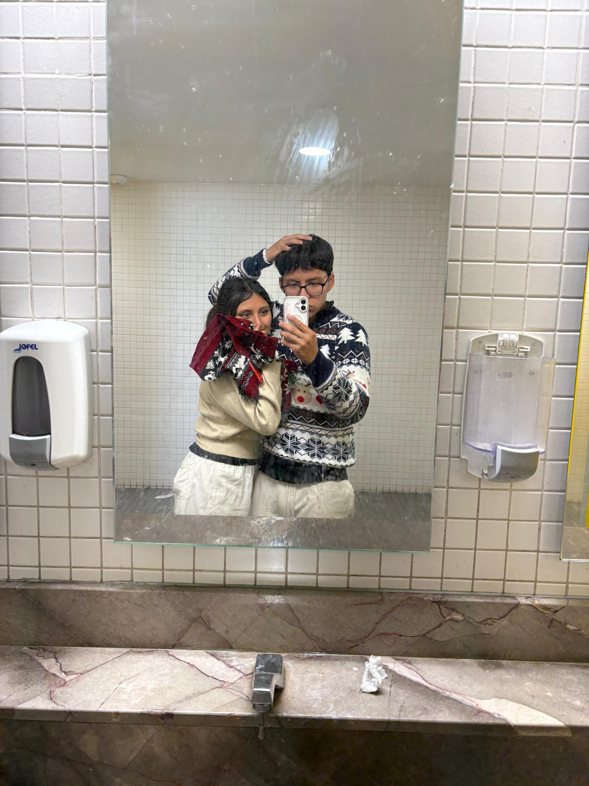
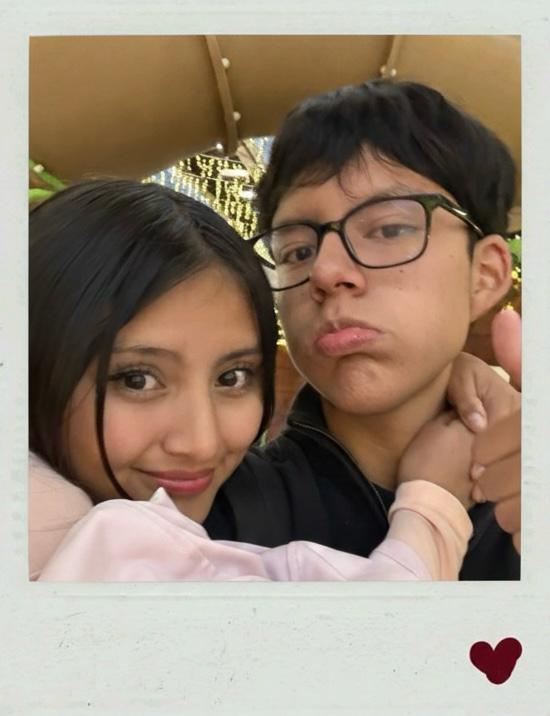
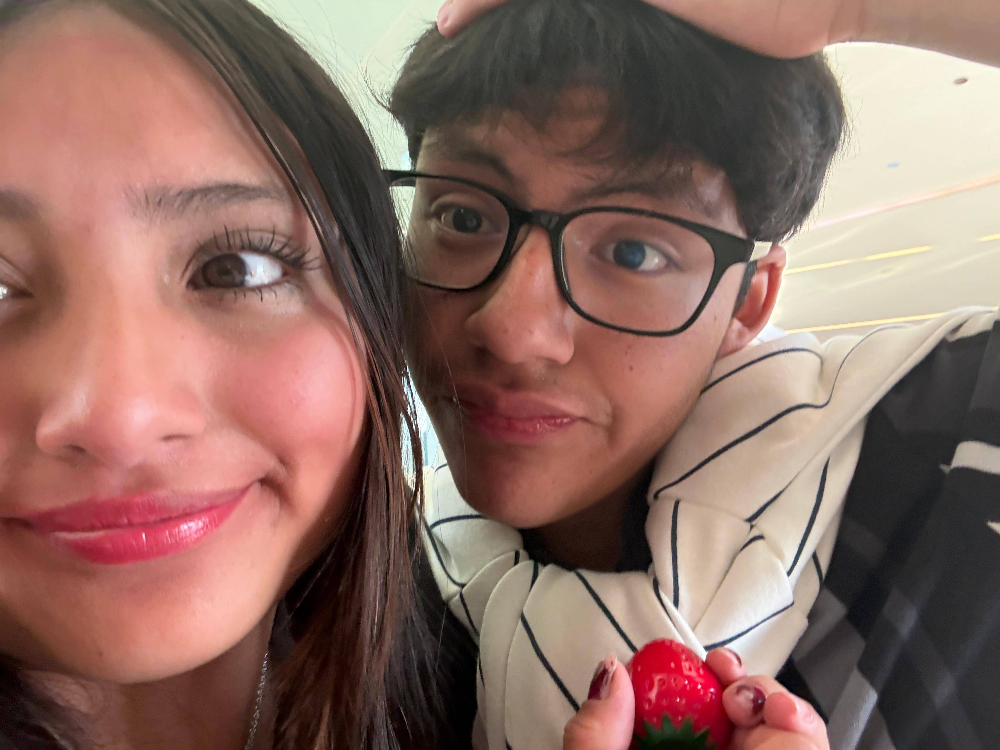
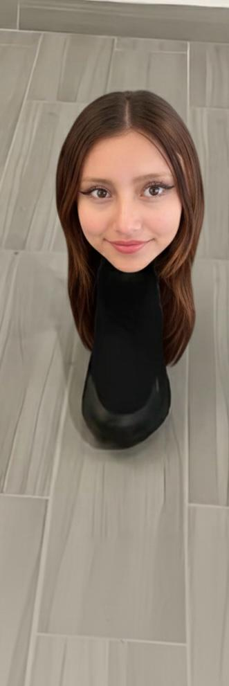
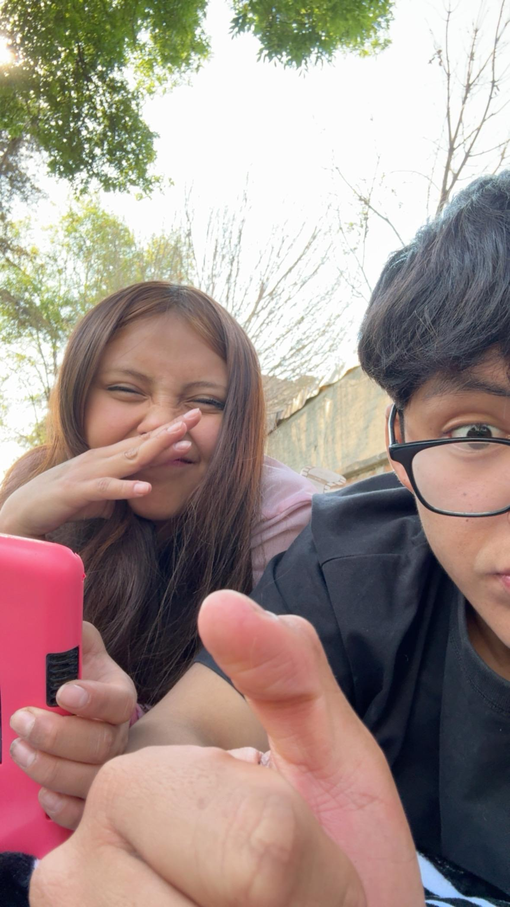
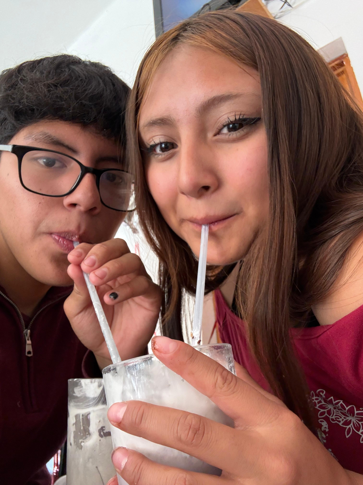
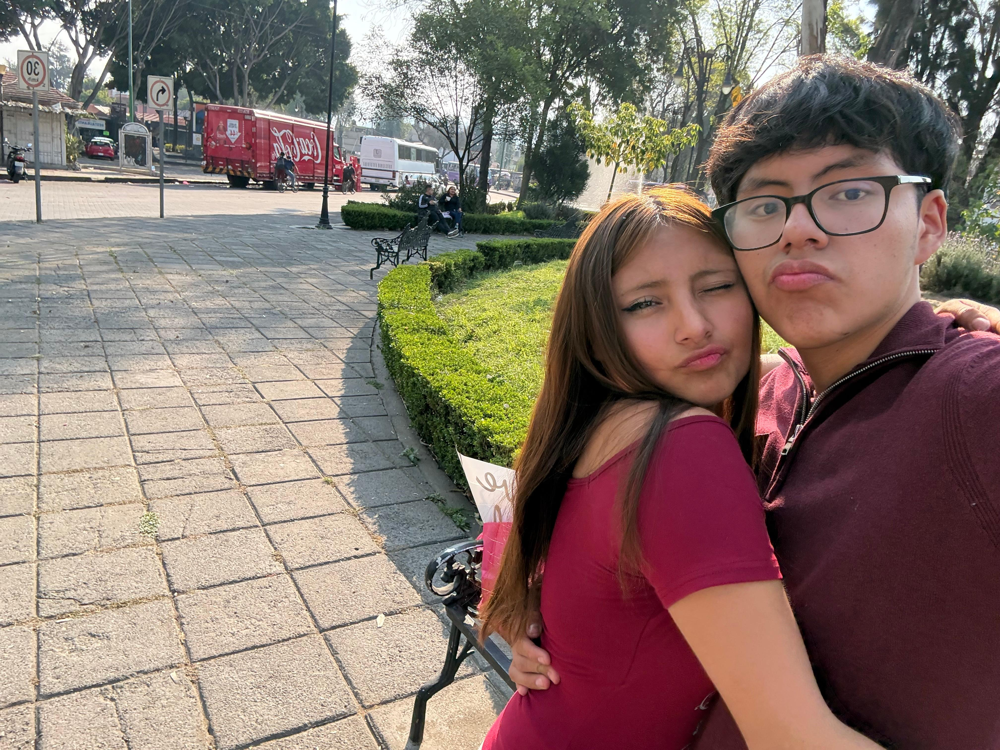
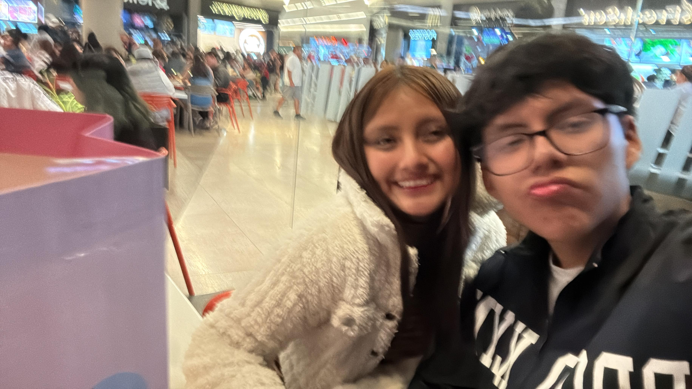

Un refugio solo nuestro
Lo que guardo para ti.
Naty, bienvenida a este espacio top secret 🤫, de la web jeje, amor te amo mucho amorcito, son las 3 am y ya casi acabo jeje.
Este espacio es para dedicarte mis mas profundos pensamientos y cualquier cosa que me haga pensar en ti, sera un tipo blog jeje, cada que pueda le hare modificaciones y tendremos un archivo de cada cosa que escriba.
Quiero que leas esto cuando estes triste o dudes de cualquier cosa, es para recordarte cuanto te amo, cuanto te extraño y lo muy importante que eres para mi, eres el amor de esta y de todas mis vidas, TE AMOOOOOOOOOOOOOOOOOOOOOOOOOOOOOOOOOO..
Gracias amor por abrirte conmigo y tenerme confianza, todo el mundo puede ver lo hermosa que eres pero yo tengo el privilegio de saber como eres en tu lado sad, es un termino que me estoy inventando xd, el lado sad es el lado que todos tenemos pero que no dejamos ver solo a la gente muy insana cercana a nosotros.
Te amo demasiado amor, no sabes lo mucho que valoro que me hayas enseñado tus miedos y temores, creeme que siempre podras contar conmigo para ayudarte, siempre cargare con tus problemas como si fueran mios, lo unico que me importa en este mundo eres tu, y siempre quiero que estes bien, admiro cada parte de ti, eres asombrosa en todos los sentidos, me gustas demasiado y estoy muy orgulloso de ti, no sabes lo demasiado fuerte que eres como para poder lidiar con todo..

"Te elegiría a ti en cien vidas, en cien mundos, en cualquier versión de la realidad, te encontraría y te elegiría."
Valoro cada momento que pasamos juntos, desde momentos serios hasta los momentos mas autistas xd, gracias por nunca juzgarme amorcito, eres la unica persona que me entiende en este mundo, jamas me juzgas y siempre me apoyas, eres mi apoyo incondicional y espero yo ser el tuyo, me encanta todos los momentos beshos que hemos pasado desde cuando nos subimos a los juegos en mi cumpleaños, cuando hicimos la capsula del tiempo o cuando jugamos ufc en la vida real, valoro cada momento a tu lado, me pone muy feliz tenerte en mi vida, ojala te vieras con mis ojos para que vieras lo mucho que me haces sentir que es inexplicable, jamas dudes de mi amor porque seria como dudar de si hay 1 grano de arena en todo el oceano y todas las playas, te adoro con todo mi corazon, quiero siempre demostrartelo amorcito.



Jamas cambies amor, somos el uno para el otro, me fascina tu forma de ser, hasta la fecha todavia tengo marcado una vez que me dijiste "Como si no supieras leerme la mente iker" y creo que tienes razon, se leerte y tu sabes leerme como si nos hubieramos escrito nosotros, sabemos identificar cualquier cosa que pase y se me hace maravilloso porque significa que nos entendemos masivamente.
No tienes idea de la paz que me da saber que solo somos tu y yo, y siempre sera asi, estamos hechos a la medida del otro :3 .

Nuestro propio lenguaje: Nuestra mezcla de idiomas y palabras inventadas.
El refugio de tus abrazos: Esa forma exacta en la que encajamos, y lo calido y bello que son nuestros abrazos.
Nuestras miradas: Como estamos conectados telepaticamente que nos podemos ver y entender todo a la perfeccion o reirnos.


Te prometo siempre estar para ti y siempre ser tu refugio en dias malos, siempre podras contar conmigo y con mi amor.
Gracias por ser mi hogar, Naty.
